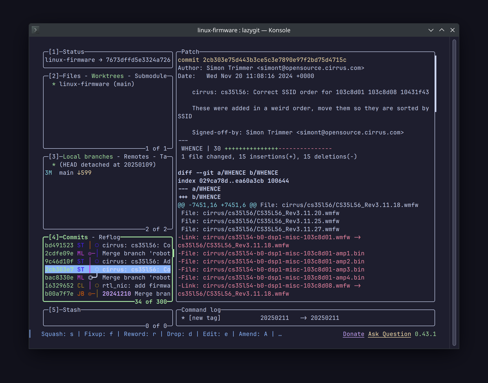

Lazygit

При работе с Git я почти не пользуюсь отдельными программами. В корпоративной разработке у меня под рукой есть IntelliJ с достаточно удобной панелькой Git. А для своих проектов я привык пользоваться Git CLI.
И всё же, время от времени, нужно посмотреть изменения в разрезе нескольких коммитов. Делать тучу git diff не очень удобно, особенно когда нужно дать хэш конкретного коммита.
И тут на помощь приходит Lazygit. Этот TUI позволяет удобно шастать по дереву Git стрелками. Окна в программе настраиваются, мышка поддерживается, темы оформления есть.
Можно делать stage для кусков кода, а не целых файлов. Можно делать commit, fixup, revert, amend… В общем, все (или почти все) функции Git в наличии.
Благодаря тому, что это TUI инструмент, им можно пользоваться на удалённых машинах по SSH. Очень удобно и практично.
Из минусов: Lazygit нет в репозиториях Debian Bookworm, но забрать бинарник можно из релизов на GitHub, а потом поместить в ~/.local/bin/.